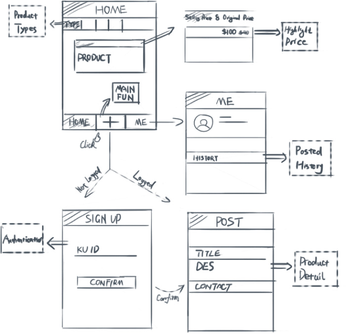
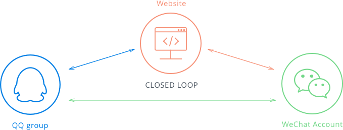

Process
User-centered design was always my design principle
Because I was a Chinese student, as both the user and the designer, I knew who users were and what users
wanted. Our main users were Chinese students at the University of Kansas, who wanted to reduce their
economic burden by purchasing used products. However, due to lacking a local platform, they could only
choose big platform like craigslist, which was not very effective to finish transaction.
Therefore, my goal was to build a Chinese-based localized fast transaction platform. To achieve the goal,
my considerations had 3 main aspects:
-
Economy
Make users feel that the products' price was attractive
-
Safety
Filter our users to be KU students only for the sake of transaction security
-
Convenience
Streamline the posting and finding experience as convenient as possible
For the economy aspect, my idea was to ask users to input original price and selling price on the posting
step, so later other people could feel they enjoyed a good bargain when they saw the price gap. And I
really concerned about the safety aspect because I didn’t want anyone was cheat when they using my
product. Therefore, I decided to ask users to input their KU ID as an authentication when they signed up
their account.
Moreover, for the sake of convenience—making users spend the least time to finish
posting, I put the posting button at the bottom center of the index page and greatly streamlined the
posting form. Of course, to make our target users become more familiar with the website, I decided to
use Chinese as the website language.

As to the marketing aspect, I created a WeChat official account and asked my teammate to publish interesting articles everyday. Though reposting articles among our friends, we gradually accumulated our first users. And we used QQ group and WeChat account to main relationships with them and received suggestion from them about improving our website. To make users better access to us, we created a closed loop with website, QQ and WeChat.
